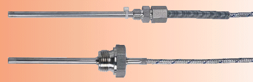
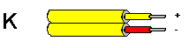
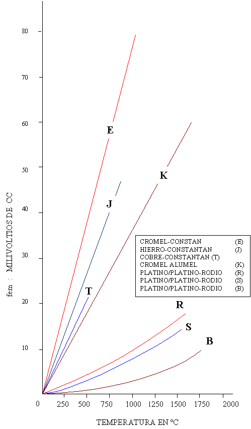

|
TERMOPARES
 Termopar se denomina a la unión de dos alambres conductores con diferente composición metalúrgica. El termopar genera una fuerza electromotriz (fem) que depende de la diferencia de temperatura de la junta caliente o de medida y la unión fría o de referencia, así como de la composición del termopar. El funcionamiento del termopar está directamente relacionado con algunas leyes termoeléctricas que analizamos a continuación. EFECTO DE VOLTA Si se unen dos metales heterogéneos que tienen igual temperaturas, se creará una diferencia de potencial en sus extremos libres cuyo valor es constante si se trata de la misma junta y tienen las mismas condiciones de temperatura en el momento de la medición.
Cuando los extremos de un mismo conductor están sujetos a una gradiente de temperatura se producirá una diferencia de potencial que depende de la diferencia de temperatura. Para elegir los materiales que formen el termopar es conveniente que la fuerza electromotriz relacionada con el efecto Peltier sea la mayor posible y la provocada por el efecto Thomson sea mínima o nula.
JUNTA CALIENTE O JUNTA DE MEDICION:: Es el termopar propiamente dicho, se denomina caliente porque es la parte del instrumento que está en contacto con el medio del cual se quiere obtener la temperatura. JUNTA FRIA O DE REFERENCIA: Es la parte del instrumento donde se realiza la medida y que generalmente se mantiene a una temperatura relativamente constante, en la mayoria de casos a la temperatura ambiente. CABLES DE EXTENSION: Son los conductores que unen la junta caliente con la junta fría. A cada tipo de termopar le corresponde cables de extensión especícos, de lo contrario se alteraría el valor de la medida por la presencia de un tercer termopar segun lo analizamos más adelante en la ley de los metales intermedios. LEY DE LAS TEMPERATURAS INTERMEDIAS La suma de la fem de un termopar con su junta fria a 0 C. Y su junta caliente a una temperatura T, más la fem de un termopar con su junta fría a la temperatura T y su junta caliente a la temperatura de medición, es igual a la fem de un termopar con su junta fría a o C. Y su junta caliente a la temperatura de medición. LEY DE LOS METALES INTERMEDIOS Cuando la junta caliente y el instrumento están distantes es necesario introducir cables de extensión de otra naturaleza que el termopar. Esto aparentemente provocaría alteraciones en la respuesta del termopar. La ley de los metales intermedios dice que el valor de la fem se mantendrá constante, siempre que el tercer metal no esté sujeto al efecto Thomson, es decir que la temperatura a lo largo de él se mantenga constante. TIPO DE TERMOPARES Para escoger los materiales que forman el termopar se tomó en cuenta algunos factores que garanticen su mantenimiento y comercialización y hasta el momento se han desarollado los siguientes tipos. COBRE - CONSTANTANO (TIPO T) Están formados por un alambre de cobre como conductor positivo y una aleación de 60% de cobre y 40% de niquel como elemento conductor negativo. Tiene un costo relativamente bajo, se utiliza para medir temperaturas bajo o 0 C. Y como limite superior se puede considerar los 350º C, ya que el cobre se oxida violentamente a partir de los 400º C. HIERRO - CONSTANTANO (TIPO J )
CHROMEL - ALUMEL (TIPO K) Una aleación de 90% de níquel y 10% de cromo es el conductor positivo y un conductor compuesto de 94% de níquel, 2% de Aluminio, 3% de manganeso y 1% de Silicio como elemento negativo. Este termopar puede medir temperaturas de hasta 1200º C. Ya que el níquel lo hace resistente a la oxidación. Se los utiliza con mucha frecuencia en los hornos de tratamientos térmicos. Su costo es considerable lo que limita su utilización. PLATINO RODIO - PLATINO (TIPO R)
Tienen como conductor negativo un alambre de platino y como conductor
positivo una aleación de 87% de platino con 13% de sodio. Este
tipo de junta desarrollada últimamente con materiales de alta
pureza son capaces de medir hasta 1500º C si se utilizan las precauciones
debidas. PLATINO RODIO - PLATINO ( TIPO S ) El conductor positivo es una aleación de 90% de platino y 10% de Rodio mientras que conductor negativo es un alambre de platino. Sus características son casi similares al termopar anterior con la diferencia que no puede usarse a temperaturas elevadas porque los metales no son de alta pureza produciendo alteraciones de la lectura a partir de los 1000º C. en adelante. MOLIBDENO - RENIO Fue desarrollado recientemente y se utiliza para temperaturas inferiores a los 1650º C. Se recomienda usarlos en atmósferas inertes, reductoras o vacío ya que el oxigeno destruye al termopar. TUNSTENO - RENIO Al igual que el anterior fue recientemente creado y no tiene datos normalizados de temperatura y milivoltajes. Puede medir temperaturas de hasta 2000º C, el oxigeno y los cambios bruscos de temperaturas destruyen al termopar. Funcionan perfectamente en atmósferas reductoras e inertes si se los protege con funda cerámicas. IRIDIO - IRIDIO RODIO Puede medir como máximo 2.000 C. Su uso es recomendable en atmósferas oxidantes que contienen oxigeno libre. El Hidrógeno produce alteraciones permanentes en el termopar, reduciendo además su vida útil. TUNGSTENO - TUNGSTENO RENIO Tiene igual utilización que el tunsteno - renio con la única diferencia que genera mayor milivoltaje por grado.
CODIGO DE COLORES PARA CABLES DE EXTENSION.  La norma americana ASTM define los siguientes codigo de colores para cables de extensión
La Norma Británica BS4937 de 1993, dispone el uso del siguiente código de Colores
La norma Francesa de la NFE dispone el uso del siguiente código de colores.
La Norma Alemana DIN tiene la siguiente codificación:
Como se puede ver los estandares para este fin aún no hjan sido unificados, por lo que se debe guardar cuidado en la verificación del tipo de termopar que se esta utilizando y dependiendo del origen de la termocupla deberá observarse el código de colores. Debe indicarse también que existen en el mercado termocuplas que no cumplen con ninguna de las normas que se ha analizado. TUBOS DE PROTECCION:
La mayoría de termopares, con excepción de pocos casos
deben protegerse con envolturas de material cerámico y metálico
que evitan su deterioro por golpes y contaminación con la atmósfera
en la cual están operando.
Las fundas metálicas vienen en tamaños normalizados y se acoplan al termopar mediante una unión roscada en el bloc de bornes, pudiendo ser fácilmente reemplazables. NORMAS DE INSTALACION Y MANTENIMIENTO
El mantenimiento de los termopares se reduce a evitar golpes que fisuren la funda de protección se reduce a evitar golpes que fisuren la funda de protección, especialmente si es del tipo cerámico. Es conveniente revizar el estado del termopar una vez por mes, pudiendo variar según las rigides del servicio. Si se comprueba que el termopar ha sido contaminado con elementos extraños, lo recomendable es verificar el milivoltaje de respuesta y si es del caso reemplazarlo ya que no admite otro tipo de calibración. Si
la temperatura no debe ser medida o controlada en forma continua, coloque
interruptores que saque de servicio al instrumento.
En la siguiente gráfica se muestra el milivoltaje generado por los termopares a diversas temperaturas de su junta caliente y con su junta fria a una temperatura de referencia de 32º F o 0º C.  |
|||||||||||||||||||||||||||||||||||||||||||||||||||||||||||||||||||||||||||||||||||||||||||||||||||||||||||||||||||||||||||||||||||||||||||||||||||||||||||||||||||||||||||||||||||||
|